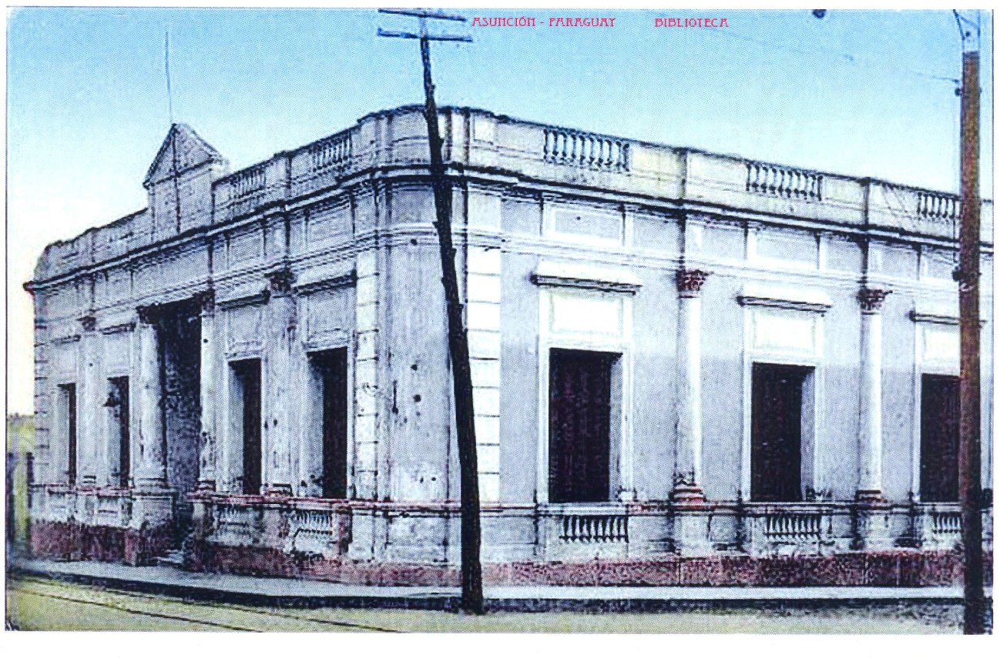

Aspectos Históricos
Inicialmente, durante la época colonial, el Archivo permaneció en la casa particular del Gobernador Hernandarias, luego en la Casa del Cabildo de la ciudad. De la época del Dr. Gaspar Rodríguez de Francia (1814-1840) existen pocas referencias en cuanto al Archivo Nacional. Durante el Gobierno de Don Carlos Antonio López (1842-1862) los documentos permanecieron en la Casa de Gobierno.
Mediante un Decreto del presidente Carlos A. López, en 1855 se crea un Archivo Nacional, con todos los legajos, protocolos o expedientes y procesos existentes que han pertenecido a los antiguos juzgados y al antiguo Cabildo.
Durante la Guerra contra la Triple Alianza, el Archivo Nacional sufrió mutilaciones. En 1868 Luque fue designada como segunda capital de la República, todo el Archivo se trasladó en diversas carretas hasta dicha ciudad, luego, tras la designación de Piribebuy como tercera Capital de la república, el Archivo fue hasta allí, en ese lugar cayó en poder del enemigo, siendo saqueado. Los documentos fueron llevados a Río de Janeiro (Brasil) hasta el año 1981, año en que fueron devueltos al Paraguay, inventariados y catalogados con el nombre de Colección del Vizconde de Río Branco. Posteriormente se buscó un espacio físico para la sede del Archivo Nacional. El predio elegido, conformó parte de la propiedad de Madame Elisa Alicia Lynch, quien fuera la pareja sentimental del Mariscal Francisco Solano López.
Se cree que el edificio el cual, inicialmente era de planta baja fue construido por el Arquitecto de origen sueco Carlos Rehnfeldt (no existen datos concretos). No se conoce cuando fue construida la segunda planta de dicho edificio.
El Decreto Nº 5269/ 1990, crea la Sub Secretaria de Estado de Cultura del Ministerio de Educación. El Archivo Nacional pasó a ser un Departamento de dicha Sub Secretaria. En el año 2008, se crea la Secretaría Nacional de Cultura, dependiente de la Presidencia de la República, y pasa a formar parte de la misma, La Dirección General de Archivos, Museos y Bibliotecas.
En el año 2010, se inician los trabajos de recuperación de la pintura del mural y se realizan los proyectos de restauración y ampliación del edificio, que se llevaron a cabo en el año 2011 en conmemoración del Bicentenario de la independencia del Paraguay.
El Archivo Nacional (AN) es el archivo histórico nacional del Paraguay, y el más antiguo del Río de la Plata. Su fundación, según la historiadora Margarita Durán Estragó, data del 16 de setiembre de 1541. Actualmente depende de la Dirección General de Patrimonio Cultural de la Secretaría Nacional de Cultura.
El Archivo Nacional se encuentra ubicado en pleno Centro Histórico de Asunción, en la esquina de Mariscal Estigarribia e Iturbe.
El acervo del Archivo Nacional se compone principalmente de documentación comprendida entre los años 1531 y 1870.
Entre los años 2013 y 2016 se incorporaron varias colecciones provenientes de donaciones o compras, como los archivos de Manuel Gondra, Juan Silvano Godoy, Natalicio González, Julio César Chávez, Carlos Calvo y Marco Fano; la Colección Bibliográfica de Roberto Quevedo y los documentos adquiridos de la Casa de Subastas Zorrilla de Uruguay.
Descripción Formal: Desde el punto de vista de la tecnología aplicada: El siglo XIX en su segunda mitad, abarca una arquitectura con influencias academicistas y eclécticas que se observan en muchos de los edificios construidos en esa época por profesionales que llegaron a nuestro país procedentes de Europa y otros países sudamericanos.
Aparece la arquitectura de fachadas (Organización Tripartita: Zócalo, Cuerpo, coronamiento) pilastras que siguen los principios ordenadores como el ritmo y repetición, y la armonía y equilibrio que se observan en las aberturas del edificio, tanto en la fachada principal como en la fachada laterales del mismo.
Tipología: Planta arquitectónica en U
Descripción: El edificio se halla implantado en un terreno en esquina, entre linderos, sobreelevado con respecto a la calle, y construido sobre límite municipal. Su acceso principal se encuentra sobre la calle Mariscal Estigarribia, posee una amplia escalera de madera con barandas y en el acceso principal, se observa una hermosa puerta de madera de dos hojas, bien diseñada con detalles jerarquizando aún más la entrada, incluyendo el importante pórtico.
Los materiales utilizados para la construcción son de origen nacional y algunos importados, como ser: Piedras para cimientos, mampostería de ladrillos cerámicos y revocados, pisos de baldosas calcáreas, escalera de madera que conduce a la planta alta que cuenta con pisos de parquet. En el acceso principal se cuenta con escalones de mármol.
Se observa en la planta baja, la bovedilla catalana, las aberturas que se componen de ventanas persianas y vidrieras.
El nuevo bloque de edificación, (2010-2011) se construyó en el sector posterior del edificio donde ha quedado un jardín interior mejorando la entrada vehicular que corresponde a 2 vehículos.
Grado de Valoración (Según Ordenanza Municipal JM 35/96): Valor Arquitectónico; Valor Ambiental.
Comentarios: El Grado de valoración es consignado por la Oficina Centro Histórico de la Municipalidad de Asunción. Forma parte del Patrimonio Nacional por la Ley 5621/16 Protección del Patrimonio Cultural, por Resolución N° 3/2012 de la Dirección General de Patrimonio Cultural /SNC y protegido por la Municipalidad de Asunción a través de las Ordenanzas HJM N° 28/96 y 35/96. El Archivo Nacional es de carácter nacional y gestión oficial. Funciona como ente dependiente de la Secretaría Nacional de Cultura que es el ente regulador de políticas culturales del Paraguay. Desde el año 1913 ocupa el mismo edificio, cuando formaba un todo con la Biblioteca Nacional y el Museo de Bellas Artes.
Observaciones
En el año 1997, a través de una Ley Nacional se creó el Archivo General de la Nación como institución, pero nunca se cumplió esa Ley. La ampliación de la segunda planta se construyó siguiendo los cánones constructivos solicitados.
Bibliografía
A.N.A. Pussineri Scala Carlos -Archivo Nacional de Asunción-Vol.XXV-1988
Informe de la Controlaría General de la República N°1495/06
Secretaría Nacional de Cultura-Dirección General de Patrimonio Cultural-Dirección de Registro de Patrimonio-Departamento de Registro de Patrimonio Cultural
Municipalidad de Asunción. Dirección General de Desarrollo Urbano- Dirección de Planeamiento-Departamento de Patrimonio Cultural
Autores: Archivo Nacional de Asunción
Vinculación con otras fichas
Ficha Nacional de Identificación del Bien Cultural Inmueble - Dirección de Registro de Patrimonio Dirección General de Patrimonio Cultural de la Secretaría Nacional de Cultura.
Ficha de Inventario de edificios Año 1990- Oficina Centro Histórico de la Municipalidad de Asunción.
Equipo de trabajo
Catalogador Arq. Mirtha Ibarra C.
Colaboradores Arq. Clarisse Insfrán
Otros Colaboradores Func. Gustavo Barrios A.
Ente componente Dirección de Registro de Patrimonio
Fecha recolección de datos 30/04/2020
Operador Clarisse Insfrán
Fecha de registro 01/05/2020